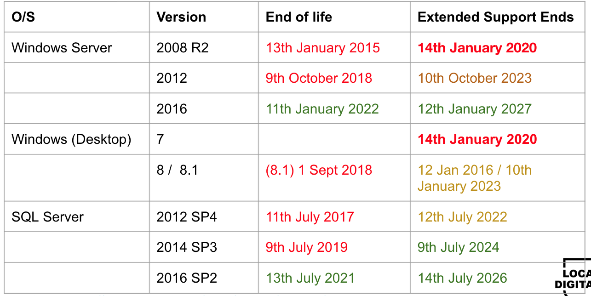

Overview of operating systems best practice
Objective
The guidance that follows is to provide an approach to implementing best practices for operating system hardening, patching and upgrading in Local Authority information systems.
Principles
By following the principles outlined throughout this document you will keep your servers (and hypervisors) in a secure and updated state, and most importantly, supported.
Server hardening should be regularly tested and any known security issues resolved upon discovery.
You should be following a robust patching policy with a testing process
No unsupported operating systems (desktop & server) should be in use
All operating systems (desktop & server) should be at version N or N-1
There should be a roadmap in place covering O/S compliance/updates
Why are these practices important?
OS Hardening:
- By implementing server hardening you effectively ‘plug’ unnecessary ‘holes’ in the server security by disabling or removing unnecessary software, as well as blocking vulnerable ports and unrequired services.
OS Patching:
- By patching your servers on a regular basis you will apply the latest critical updates and security patches which all contribute to keeping your servers in an optimal state, and most importantly, secure.
OS Upgrading:
- By keeping on top of your OS Upgrade program it will assist in the goal of keeping all of your servers in a supported state. Unsupported servers should be viewed as potential entry points for security breaches.
Best Practices: OS hardening
Best practices for OS hardening include, but are not limited to the following organisation considerations:
Implement findings from your regular IT Health Check (ITHC) reports.
Follow the the latest recommended settings from Microsoft, NCSC and trusted vendors.
Where possible keep all servers at the same revision level
Test every proposed change before making the change in the production environment
After building a new server scan it with Nessus (or other ITHC tool) to check you have no security issues.
For Deployment Purposes, it is considered good practice to have a template machine for your preferred OS ready in your hypervisor environment and for it to be regularly updated with the latest patches and service packs, along with any findings from your regular ITHC (IT Health Checks) and guidance from the NCSC.
It is also recommended to update your Microsoft OS ISO’s with newer builds as Microsoft make them available.
Best practices for OS Hardening include, but are not limited to*:
VM Settings: - Configure the device boot order to prevent unauthorized booting from alternate media
User Account Security: - Disable unwanted local usernames, and put complex passwords on those that remain - Use LAP Services for administration accounts
Network Configuration: - Configure all network interfaces with the latest recommended settings from Microsoft, NCSC and trusted vendors.
*For more comprehensive lists refer to:
https://www.netwrix.com/windows_server_hardening_checklist.html
https://www.ncsc.gov.uk/collection/10-steps-to-cyber-security/the-10-steps/secure-configuration
Best practices for OS hardening include, but are not limited to:
Registry Security Configuration: - Follow the the latest recommended settings from Microsoft, NCSC and trusted vendors.
General Security Settings: - Disable unneeded services - Remove unneeded Windows components
Audit Policy Settings
Configure log shipping to SIEM for monitoring
Software Security Guide: - Ensure AV / AntiMalware software is running and kept up to date
Best practices: OS patching
Best practices for OS patching include but are not limited to:
Server operating systems: - Utilise a product such as Microsoft WSUS to manage your patching process. - Post approval of patching apply to a test group of servers that are representative of your server estate. - Review server operation post patching and troubleshoot if necessary. When you are happy with the process, roll out in a tiered manner across your estate.
Hypervisor operating systems: - For VMware configure VMware Update Manager, Baseline your systems and regularly update/patch as issued by VMware. - For Microsoft Hyper-V, patch servers as dictated by Microsoft and your Server Hardware Vendor.
Best practices for OS Patching include but are not limited to: - As mentioned earlier you should apply approved patches to your ‘Gold Image’ template as part of this process. It is also recommended to update your Microsoft OS ISO’s with newer builds as Microsoft make them available. - Regular automated implementation of security patches should be implemented at least monthly to desktops and servers (virtual and physical).
Best practices : OS upgrading
Best practices for OS upgrading include but are not limited to: - Aim for ‘N/N-1’ policy on server use
This means you should only be running the current and last previous OS
Keep your hypervisor servers at the highest level of support / operation that your hardware allows
Refer to the server manufacturer and cross-check with the hypervisor vendor (VMware or Microsoft)
Hardware Compatibility List (HCL)
Older Servers may not support the latest version of the hypervisor (and similarly newer servers may not support older versions of the hypervisor)
Always have a strategy for the upgrading of:
Server operating systems
Server applications
Hypervisors
Endpoint additional security considerations
End user devices have additional security considerations over and above the OS being in support and regularly patched. These affect Windows 10, Android and iOS devices. Refer to :
https://www.ncsc.gov.uk/collection/end-user-device-security/platform-specific-guidance
As these devices are the primary items for your users to access your systems you should also consider the following: - Use of MDM Software (Mobile Device Management) to enforce security policies. - Use of (and regular update of) Anti-Virus and Anti-Malware Software - Regular education of your user base around safety and security online, with particular reference to ‘Social Engineering’ techniques and how to avoid falling foul of these.
https://www.ncsc.gov.uk/collection/end-user-device-security/eud-overview/common-questions
What to do next: - Carry out an IT Health Check (ITHC) at least annually and consider any recommendations from it on your server and hypervisor estate (along with your deployment template VMs).
Implement the appropriate findings.
Regularly carry out Vulnerability Scanning with a product such as Nessus.
Implement the findings.
Ensure your Server Patching Regime is optimal.
Regular downloads and approvals on your patching system
Apply patches to test servers and then verify their suitability prior to the updates being applied across the server estate.
Deploy in a structured manner across your estate
Create and evolve a server upgrade plan:
Goal is to not have any unsupported servers or applications in use
Aim for a ‘N/N-1’ approach to live servers (ie run the latest or 1-previous OS)
For example this would currently be Windows Server 2019 and 2016
2012/R2 servers should be in the process of being replaced at this moment in time despite still being in the extended support phase of their lifecycle.
No 2008/R2 servers or earlier should be in use anymore
Threat exposure - version support

Refer to : https://docs.microsoft.com/en-us/lifecycle/products/
Threat exposure
Continued operation use of unsupported OS means: - No further security patches issued by the vendor. - Existing vulnerabilities remain and are well known by hackers and criminals and therefore become a soft target. - AntiVirus software does not cover risk exposure of OS vulnerabilities.
Policies
Where application software still is dependent on an unsupported operating system additional technical controls should be considered: - Run the application in compatibility mode on Windows 10 - Virtualised containers, e.g. Docker - Place the affected workstation / server with the application behind a Layer 7 firewall providing greater control of application traffic and probe attacks - Certain products may be able to have Extended Support Purchased (Such as Windows Server 2008R2) - Consider replacing the application
Note: The above options should only be considered until the application can be upgraded or replaced and hosted on a supported OS.